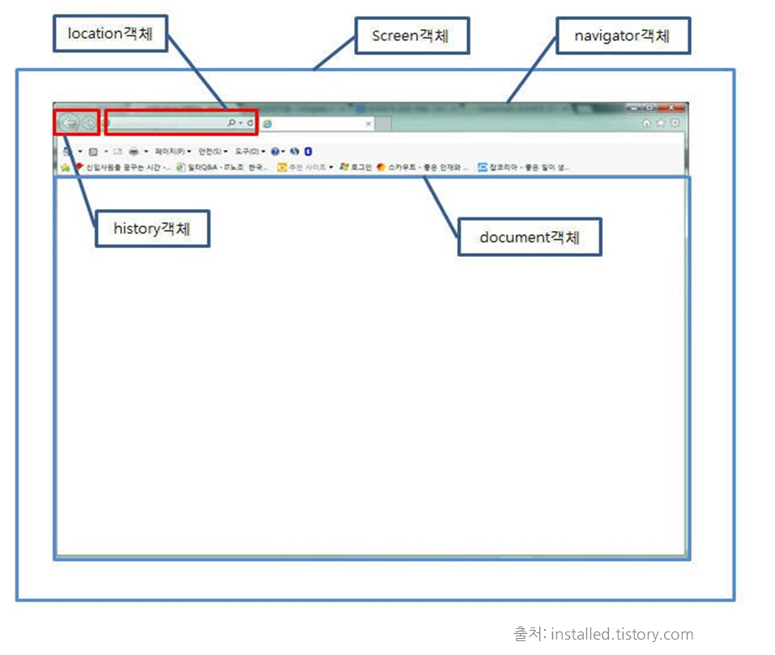

Browser Object Model(BOM)
2014. 2
Overview
- Browser Object Model
- Window Object
- Screen Object
- Location Object
- Navigator Object
- History Object
Browser Object Model
- Set of browser objects
- There is no public standard, but all major browsers support it
- Netscape3 most standard
- Browser controls through the BOM interface
Browser Object Model Hierarchy
- Window
- Screen
- Location
- Navigator
- History

Browser Object Model in browser

Window Object
- Root object of Web Browser
- The window object represents an open window in a browser
- Global object
window.alert('test'); === alert('test');
Window Objects
- Browser Object Model (BOM)
- Control the browser
- Document Object Model (DOM)
- Access contents of the page
- Javascript objects and functions
- Object
- Array
- Function
- Etc...
Window Object Properties
- document, history, location, navigator, screen
- self
- Returns the current window (self === window)
- closed
- Returns a Boolean value indicating whether a window has been closed or not
- This browser is not supported
- defaultStatus
- Sets or returns the default text in the statusbar of a window
- This browser is not supported
- name
- Sets or returns the name of a window
- This browser is not supported
- frames
- Returns an array of all the frames (including iframes) in the current window
- This browser is not supported
Window Object Properties
- opener
- Returns a reference to the window that created the window
- This browser is not supported
- top
- Returns the topmost browser window
- This browser is not supported
- This browser is not supported
- parent
- Returns the parent window of the current window
- This browser is not supported
- status
- Sets or returns the text in the statusbar of a window
- This browser is not supported
Window Object Properties
- innerHeight
- Returns the inner height of a window's content area
- This browser is not supported
- innerWidth
- Returns the inner width of a window's content area
- This browser is not supported
- outerHeight
- Returns the outer height of a window, including toolbars/scrollbars
- This browser is not supported
- outerWidth
- Returns the outer width of a window, including toolbars/scrollbars
- This browser is not supported
Window Object Properties
- screenLeft, screenTop, screenX, screenY
- Returns value coordinate of the window relative to the screen
- This browser is not supported
- pageXOffset
- Returns the pixels the current document has been scrolled (horizontally) from the upper left corner of the window
- This browser is not supported
- pageYOffset
- Returns the pixels the current document has been scrolled (vertically) from the upper left corner of the window
- This browser is not supported
Window Object Methods
- alert()
- Displays an alert box with a message and an OK button
- atob(), btoa()
- Decodes and encodes a string in base-64
function window_encode_decode() { var str = 'Hellow IDE?'; var enc = window.btoa(str); var dec = window.atob(enc); var res = 'Encoded String: ' + enc + '\n' + 'Decoded String: ' + dec; alert(res); }
Window Object Methods
- confirm()
- Displays a dialog box with a message and an OK and a Cancel button
var result = confirm("Confirm");
- Displays a dialog box that prompts the visitor for input
var name= prompt('name');
alert('your name: ' + name);
- Prints the content of the current window
window.print();
Window Object Methods
- open()
- Opens a new browser window
function window_open() { myWindow = window.open("","","width=200,height=100"); }
- Closes the current window
window.close();
- Sets focus to the current window
window.focus();
- Removes focus from the current window
window.blur();
Window Object Methods
- moveBy()
- Moves a window relative to its current position
window.moveTo(250,250);
- Moves a window to the specified position
window.moveTo(0,0);
- Resizes the window by the specified pixels
window.resizeBy(250,250);
- Resizes the window to the specified width and height
window.resizeTo(250,250);
Window Object Methods
- scrollBy()
- Scrolls the content by the specified number of pixels
window.scrollBy(100,0);
- Scrolls the content to the specified coordinates
window.scrollTo(500,0);
- This method has been replaced by the scrollTo() method.
Window Object Methods
- setTimeout()
- Calls a function or evaluates an expression after a specified number of milliseconds
var timeoutID = setTimeout( function() { 'logic' }, 1000 );
- Clears a timer set with setTimeout()
clearTimeout(timeoutID);
Window Object Methods
- setInterval()
- Calls a function or evaluates an expression at specified intervals (in milliseconds)
var intervalID = setInterval( function() { 'logic' }, 1000 );
- Clears a timer set with setInterval()
clearInterval(intervalID);
Screen Object
- The screen object contains information about the visitor's screen
window.screen === screen
Screen Object Properties
- availHeight
- Returns the height of the screen (excluding the Windows Taskbar)
- This browser is not supported
- availWidth
- Returns the width of the screen (excluding the Windows Taskbar)
- This browser is not supported
- height
- Returns the total height of the screen
- This browser is not supported
- width
- Returns the total width of the screen
- This browser is not supported
- colorDepth
- Returns the bit depth of the color palette for displaying images
- This browser is not supported
- pixelDepth
- Returns the color resolution (in bits per pixel) of the screen
- This browser is not supported
Location Object
- The location object contains information about the current URL
window.location === screen
Location Object Properties
- hash
- Sets or returns the anchor portion of a URL
- This browser is not supported
- host
- Sets or returns the hostname and port of a URL
- This browser is not supported
- hostname
- Sets or returns the hostname of a URL
- This browser is not supported
- href
- Sets or returns the entire URL
- This browser is not supported
Location Object Properties
- pathname
- Sets or returns the path name of a URL
- This browser is not supported
- port
- Sets or returns the port number the server uses for a URL
- This browser is not supported
- protocol
- Sets or returns the protocol of a URL
- This browser is not supported
- search
- Sets or returns the query portion of a URL
- This browser is not supported
Location Object Methods
- assign()
- Loads a new document
location.assign("http://leechwin.tistory.com");
- Reloads the current document
location.reload();
- Replaces the current document with a new one
location.replace("http://www.tizenschools.com");
Navigator Object
- The navigator object contains information about the browser
window.navigator === navigator
Navigator Object Properties
- appCodeName
- Returns the code name of the browser
- appName
- Returns the name of the browser
- appVersion
- Returns the version information of the browser
- cookieEnabled
- Determines whether cookies are enabled in the browser
- language
- Returns the language of the browser
Navigator Object Properties
- onLine
- Determines whether the browser is online
- platform
- Returns for which platform the browser is compiled
- product
- Returns the engine name of the browser
- userAgent
- Returns the user-agent header sent by the browser to the server
Navigator Object Methods
- javaEnabled()
- Specifies whether or not the browser has Java enabled
navigator.javaEnabled();
History Object
- The history object contains the URLs visited by the user (within a browser window)
window.history === history
History Object Properties
- length
- Returns the number of URLs in the history list
- This browser is not supported
History Object Methods
- go()
- Loads a specific URL from the history list
history.go(-1);
- Loads the previous URL in the history list
history.back();
- Loads the next URL in the history list
history.forward();
References
- JavaScript: The Definitive Guide 5/E
- w3schools.com
Thank you!
leechwin1@gmail.com